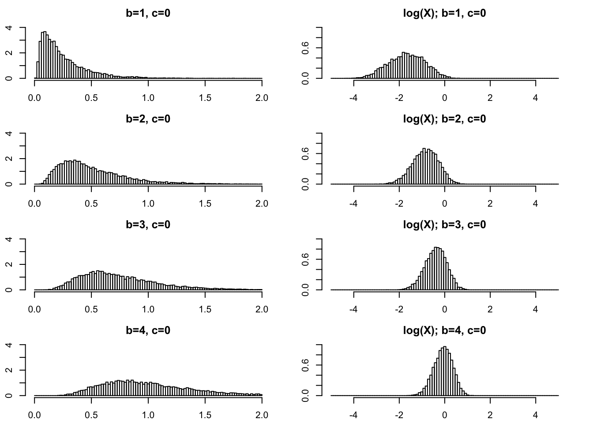
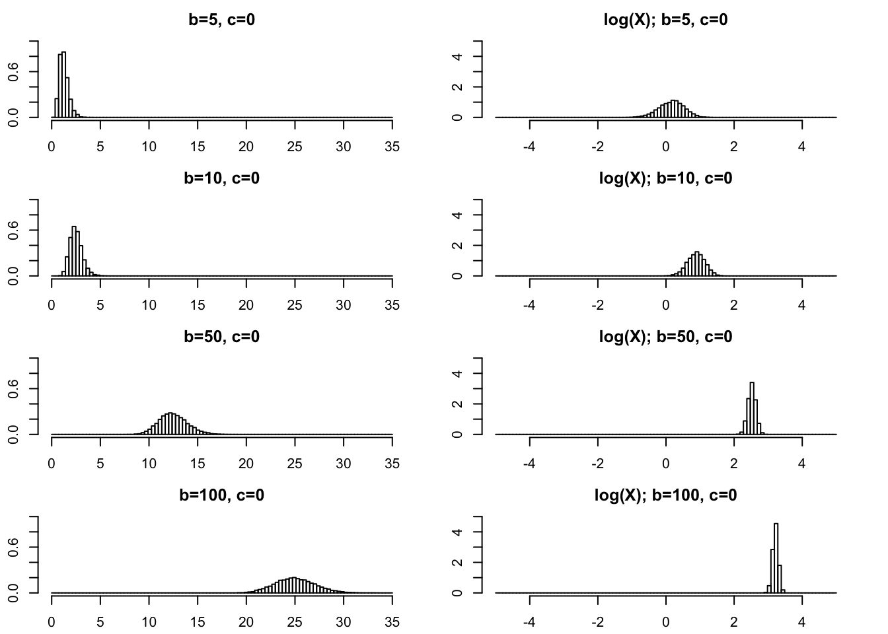
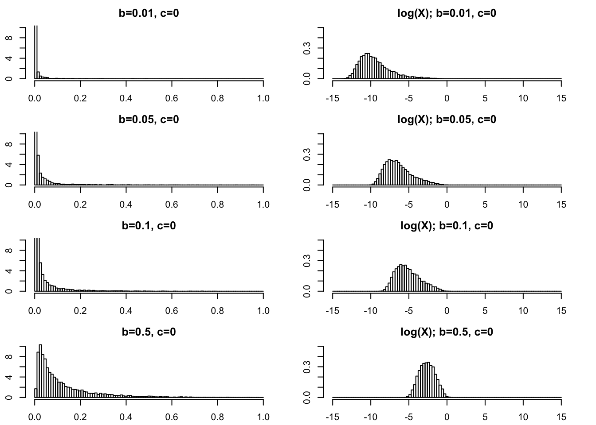
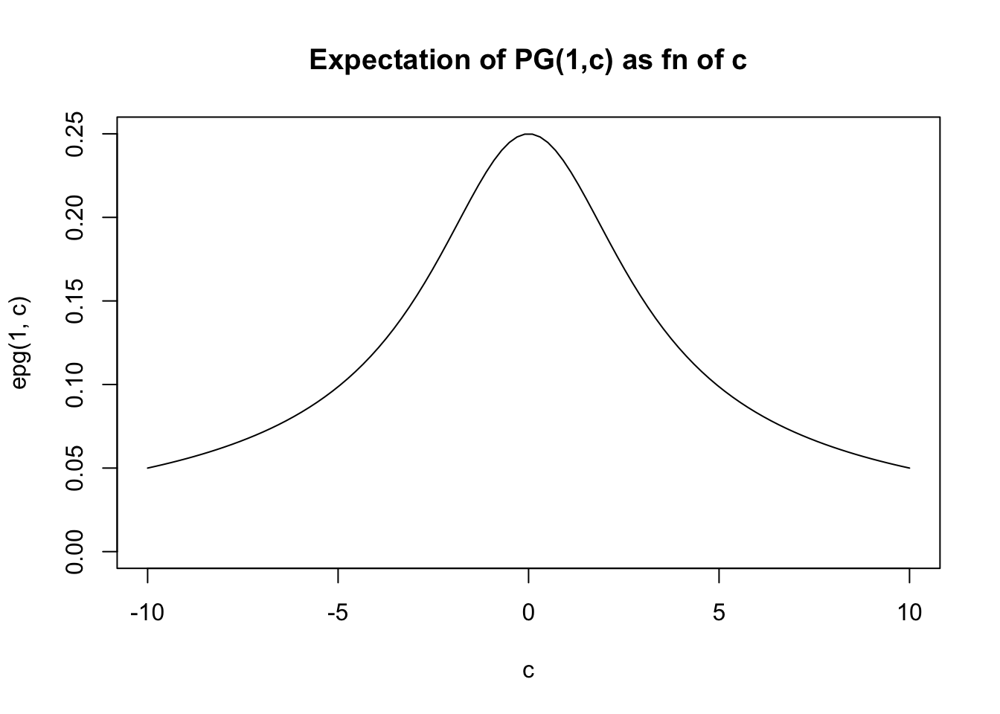
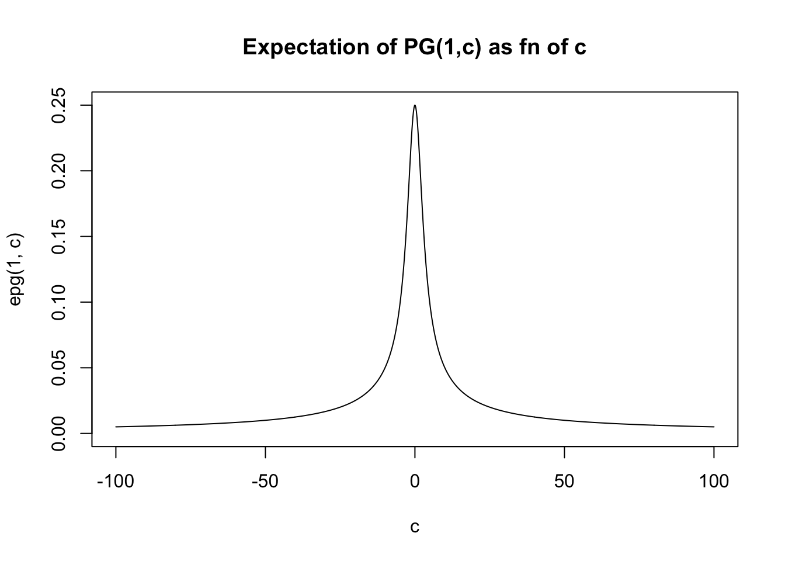

Last updated: 2020-09-23
Checks: 7 0
Knit directory: fiveMinuteStats/analysis/
This reproducible R Markdown analysis was created with workflowr (version 1.6.2). The Checks tab describes the reproducibility checks that were applied when the results were created. The Past versions tab lists the development history.
Great! Since the R Markdown file has been committed to the Git repository, you know the exact version of the code that produced these results.
Great job! The global environment was empty. Objects defined in the global environment can affect the analysis in your R Markdown file in unknown ways. For reproduciblity it’s best to always run the code in an empty environment.
The command set.seed(12345) was run prior to running the code in the R Markdown file. Setting a seed ensures that any results that rely on randomness, e.g. subsampling or permutations, are reproducible.
Great job! Recording the operating system, R version, and package versions is critical for reproducibility.
Nice! There were no cached chunks for this analysis, so you can be confident that you successfully produced the results during this run.
Great job! Using relative paths to the files within your workflowr project makes it easier to run your code on other machines.
Great! You are using Git for version control. Tracking code development and connecting the code version to the results is critical for reproducibility.
The results in this page were generated with repository version 321c6eb. See the Past versions tab to see a history of the changes made to the R Markdown and HTML files.
Note that you need to be careful to ensure that all relevant files for the analysis have been committed to Git prior to generating the results (you can use wflow_publish or wflow_git_commit). workflowr only checks the R Markdown file, but you know if there are other scripts or data files that it depends on. Below is the status of the Git repository when the results were generated:
Ignored files:
Ignored: .Rhistory
Ignored: .Rproj.user/
Ignored: analysis/.Rhistory
Ignored: analysis/bernoulli_poisson_process_cache/
Untracked files:
Untracked: _workflowr.yml
Untracked: analysis/CI.Rmd
Untracked: analysis/gibbs_structure.Rmd
Untracked: analysis/libs/
Untracked: analysis/r_simplemix_extended_template.Rmd
Untracked: analysis/results.Rmd
Untracked: analysis/shiny/tester/
Unstaged changes:
Modified: analysis/LR_and_BF.Rmd
Note that any generated files, e.g. HTML, png, CSS, etc., are not included in this status report because it is ok for generated content to have uncommitted changes.
These are the previous versions of the repository in which changes were made to the R Markdown (analysis/polya_gamma.Rmd) and HTML (docs/polya_gamma.html) files. If you’ve configured a remote Git repository (see ?wflow_git_remote), click on the hyperlinks in the table below to view the files as they were in that past version.
| File | Version | Author | Date | Message |
|---|---|---|---|---|
| Rmd | 321c6eb | Matthew Stephens | 2020-09-23 | workflowr::wflow_publish(“polya_gamma.Rmd”) |
library("BayesLogit")The Pólya–Gamma distribution is used in Bayesian analysis of logistic regression and related models. See Polson et al, henceforth PSW.
However, I could not find an accessible summary of its basic properties, so I decided to summarize them here. For now I am not going to explain how this distribution is used, so you will have to read the primary literature for that.
This is work in progress as I learn about the distribution myself.
PSW define a random variable \(X\) to have a Pólya–Gamma distribution with parameters \(b>1\) and \(c\ in R\) if it has the same distribution as the following (non-negative) weighted sum of Gamma random variables: \[X = 1/(2\pi^2) \sum_{k=1}^\infty \frac{g_k}{(k-0.5)^2 + c^2/(4\pi)^2}\] where \(g_k \sim \Gamma(b,1)\) are mutually independent.
Note that \(X\) is non-negative. As we shall see, the Pólya–Gamma distribution can have a density that looks somewhat similar to a Gamma distribution, with a mode at zero or a mode away from zero. If you have never come across this distribution before it is perhaps helpful to think of it as most similar to a Gamma distribution (among commonly-used distributions).
The PG distribution does not have a closed-form density. However the role of the parameters \(b,c\) can be better understood by noting that the density for \(PG(b,c)\) factorizes into a part that depends on \(c\) and a part that depends on \(b\).
Specifically, if \(f(\cdot; b,c)\) denotes the density of \(PG(b,c)\) then \[f(x; b,c) \propto \exp(-c^2x/2) f(x; b,0).\] The phrase “exponential tilting” is sometimes used to describe multiplying a density by an exponential term like this. So we say that \(PG(b,c)\) is obtained from \(PG(b,0)\) by exponential tilting, with \(c^2\) controlling the amount of tilt.
The BayesLogit package provides ways to simulate from this distribution. Here we use this to plot some histograms of samples from PG distributions.
rpg_hist = function(b,c,nsamp=10000,xmax=2,log=FALSE,...){
x = rpg(nsamp,b,c)
if(log==TRUE){
x = log(x)
title = "log(X); "
breaks = seq(-xmax,xmax,length=100)
x = x[x<xmax & x>(-xmax)]
} else {
title = ""
breaks = seq(0,xmax,length=100)
x = x[x<xmax]
}
hist(x,breaks = breaks,probability=TRUE,main=paste0(title, "b=",b,", c=",c),...)
}We start with \(PG(b,0)\) as the base case.
In practical applications \(b\) is often an integer. So \(b\geq 1\) is of primary interest and we start there. On the left I give histograms of \(X\) and on the right I plot \(\log(X)\). As \(b\) gets bigger the variance of \(\log(X)\) gets smaller.
par(mfcol=c(4,2),mai=rep(0.3,4))
rpg_hist(1,0,xmax=2,ylim=c(0,4))
rpg_hist(2,0,xmax=2,ylim=c(0,4))
rpg_hist(3,0,xmax=2,ylim=c(0,4))
rpg_hist(4,0,xmax=2,ylim=c(0,4))
rpg_hist(1,0,xmax=5,log=TRUE,ylim=c(0,1))
rpg_hist(2,0,xmax=5,log=TRUE,ylim=c(0,1))
rpg_hist(3,0,xmax=5,log=TRUE,ylim=c(0,1))
rpg_hist(4,0,xmax=5,log=TRUE,ylim=c(0,1))
par(mfcol=c(4,2),mai=rep(0.3,4))
rpg_hist(5,0,xmax=35,ylim=c(0,1))
rpg_hist(10,0,xmax=35,ylim=c(0,1))
rpg_hist(50,0,xmax=35,ylim=c(0,1))
rpg_hist(100,0,xmax=35,ylim=c(0,1))
rpg_hist(5,0,xmax=5,ylim=c(0,5),log=TRUE)
rpg_hist(10,0,xmax=5,ylim=c(0,5),log=TRUE)
rpg_hist(50,0,xmax=5,ylim=c(0,5),log=TRUE)
rpg_hist(100,0,xmax=5,ylim=c(0,5),log=TRUE)
For completeness we show some plots for very small \(b\) too.
par(mfcol=c(4,2),mai=rep(0.3,4))
rpg_hist(.01,0,xmax=1,ylim=c(0,10))
rpg_hist(.05,0,xmax=1,ylim=c(0,10))
rpg_hist(.1,0,xmax=1,ylim=c(0,10))
rpg_hist(.5,0,xmax=1,ylim=c(0,10))
rpg_hist(.01,0,xmax=15,ylim=c(0,.5),log=TRUE)
rpg_hist(.05,0,xmax=15,ylim=c(0,.5),log=TRUE)
rpg_hist(.1,0,xmax=15,ylim=c(0,.5),log=TRUE)
rpg_hist(.5,0,xmax=15,ylim=c(0,.5),log=TRUE)
If \(c\) is small then the distribution looks similar to \(PG(b,0)\) which has mean \(b/4\).
If \(c\) is large then it becomes concentrated about the mean, which for large \(c\) is approximately \(b/2c\).
The Laplace tranform of \(PG(b,0)\) has a nice closed form, and is given by: \[f(t) = [\cosh(\sqrt{t/2})]^{-b}\].
Notice that \(E(g_k)=b\) so the expectation of \(X\) scales linearly with \(b\). Clearly it also decreases with \(c\).
In fact the expectation is given by PSW as \[E(X) = (b/2c) \tanh(c/2) = (b/2c) \frac{\exp(c)-1}{\exp(c)+1}\]
For small \(x\), \(\tanh(x) \approx x\) so for small \(c\) we have \(E(X) \approx b/4\). For large \(x\), \(\tanh(x) \approx 1\) so for large \(c\) we have \(E(X) \approx b/(2c)\).
In general the expectation lies betweed 0 and \(b/4\).
We can compute the expectation
epg = function(b,c){
(b/(2*c)) * tanh(c/2)
}And then we can plot the expectation for \(b=1\) as a function of \(c\). (For other \(b\) the graph will have the same shape, just multiplied by \(b\)).
c = seq(-10,10,length=100)
plot(c,epg(1,c),type="l",ylim=c(0,0.25), main="Expectation of PG(1,c) as fn of c")
And for a wider range of \(c\):
c = seq(-100,100,length=1000)
plot(c,epg(1,c),type="l",ylim=c(0,0.25), main="Expectation of PG(1,c) as fn of c")
sessionInfo()R version 3.6.0 (2019-04-26)
Platform: x86_64-apple-darwin15.6.0 (64-bit)
Running under: macOS Mojave 10.14.6
Matrix products: default
BLAS: /Library/Frameworks/R.framework/Versions/3.6/Resources/lib/libRblas.0.dylib
LAPACK: /Library/Frameworks/R.framework/Versions/3.6/Resources/lib/libRlapack.dylib
locale:
[1] en_US.UTF-8/en_US.UTF-8/en_US.UTF-8/C/en_US.UTF-8/en_US.UTF-8
attached base packages:
[1] stats graphics grDevices utils datasets methods base
other attached packages:
[1] BayesLogit_2.1
loaded via a namespace (and not attached):
[1] Rcpp_1.0.5 rstudioapi_0.11 whisker_0.4 knitr_1.29
[5] magrittr_1.5 workflowr_1.6.2 R6_2.4.1 rlang_0.4.7
[9] stringr_1.4.0 tools_3.6.0 xfun_0.16 git2r_0.27.1
[13] htmltools_0.5.0 ellipsis_0.3.1 yaml_2.2.1 digest_0.6.25
[17] rprojroot_1.3-2 tibble_3.0.3 lifecycle_0.2.0 crayon_1.3.4
[21] later_1.1.0.1 vctrs_0.3.4 fs_1.4.2 promises_1.1.1
[25] glue_1.4.2 evaluate_0.14 rmarkdown_2.3 stringi_1.4.6
[29] compiler_3.6.0 pillar_1.4.6 backports_1.1.10 httpuv_1.5.4
[33] pkgconfig_2.0.3 This site was created with R Markdown